Tudo numa tela
Painel
O que importa hoje, numa tela.
- Processos ativos
- Prazos que vencem nos próximos dias úteis
- Honorários recebidos e a receber
- Cobranças a fazer
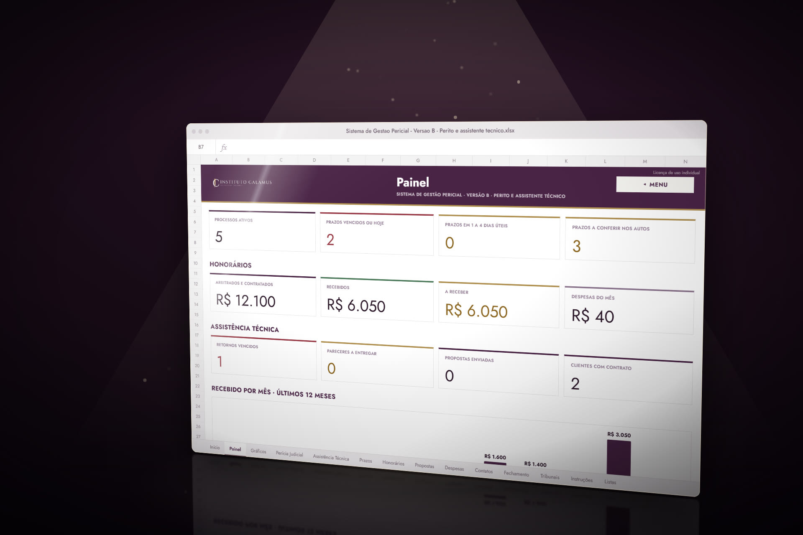
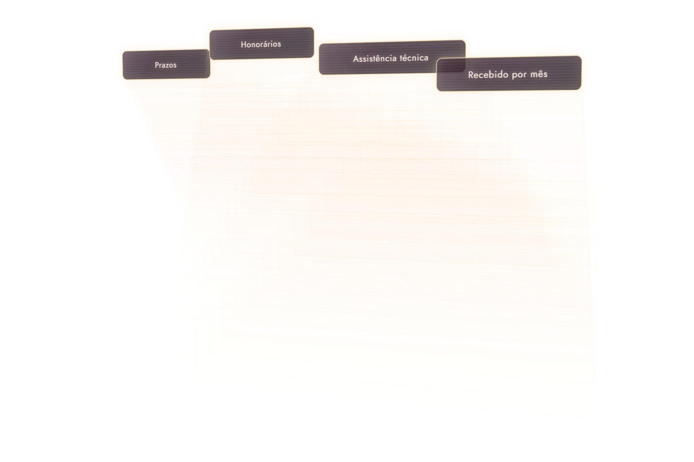
Instituto Calamus apresenta
Processos, honorários, fechamento do mês e cadastros nos tribunais numa planilha só, com um Painel que mostra o que vence e o que falta receber.
Sem mensalidade · para Excel 2016 ou superior
Entrega pela Kiwify · garantia de 7 dias
Intimação no e-mail, prazo no post-it, honorário no extrato e um login diferente em cada tribunal. O Sistema de Gestão Pericial junta tudo isso numa planilha só.
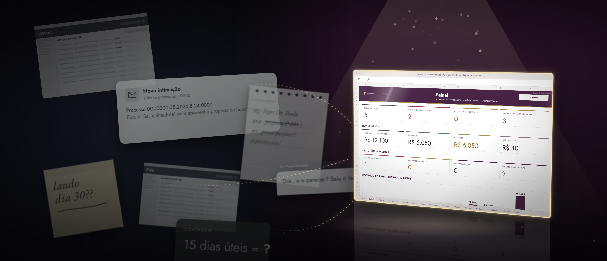
O que ela faz
Tudo numa tela
O que importa hoje, numa tela.


Número, tribunal, vara, comarca, autor e réu, área e status. O ID liga cada processo às outras abas, e o próximo prazo aparece sozinho. Na versão B, perícias e assistências técnicas ficam em abas separadas.
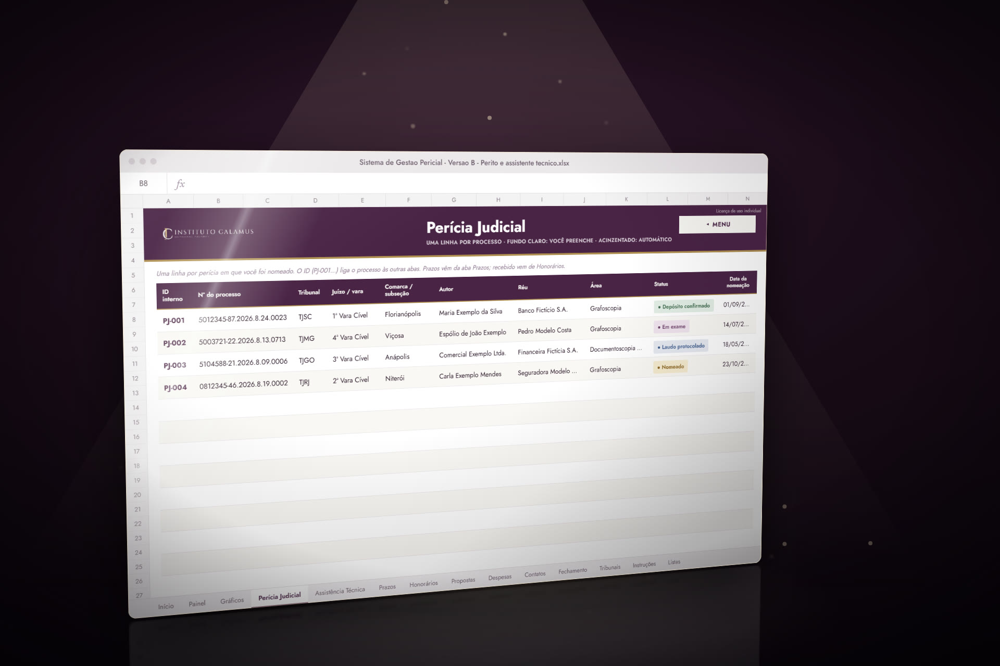
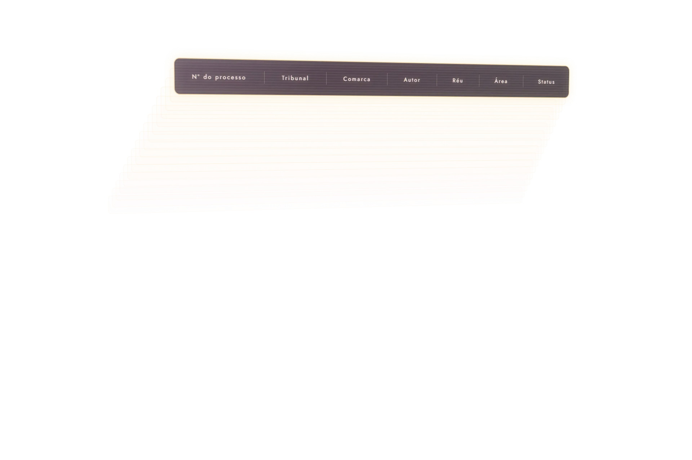
Cada valor no seu lugar
Previsto ou recebido: cada valor para você não esquecer de receber seus honorários ao final do processo.
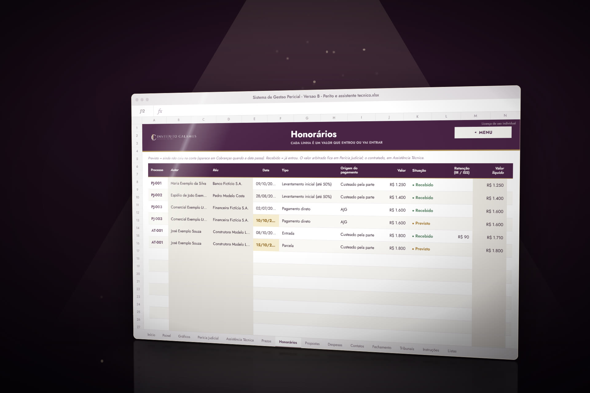
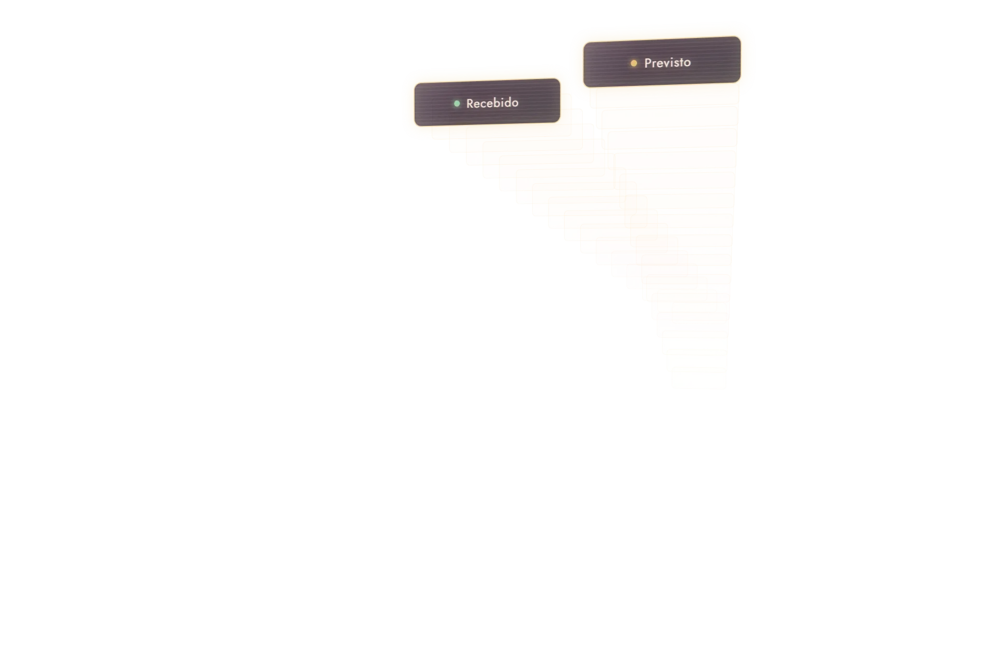
Mês a mês
Recebimentos, retenções e despesas de cada mês para você se organizar, sabendo exatamente o que entrou.
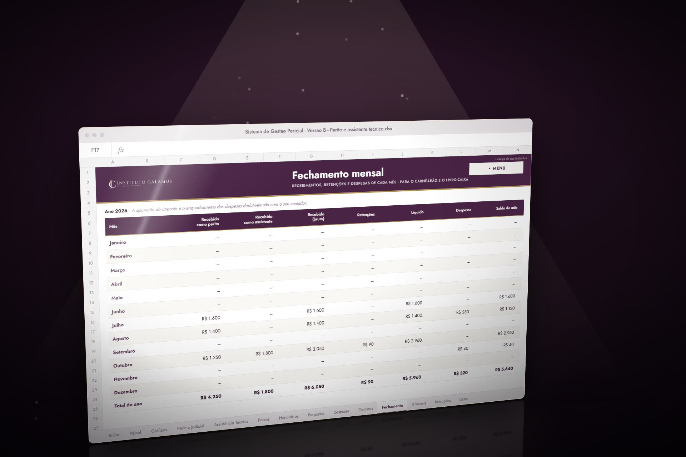
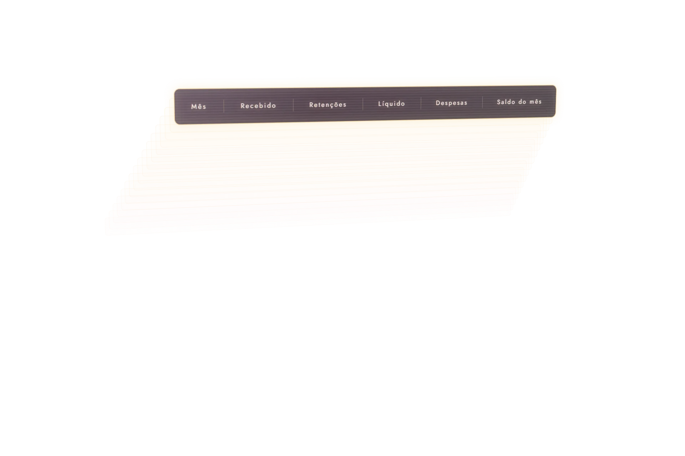
Todos os cadastros
Sistema, situação do cadastro, login e link de acesso de cada tribunal.
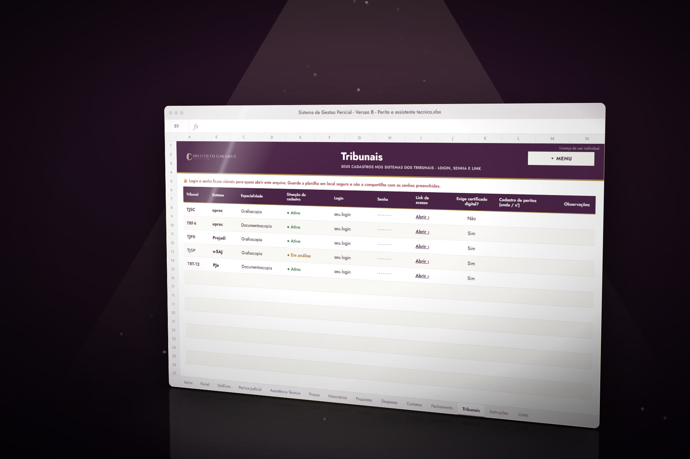
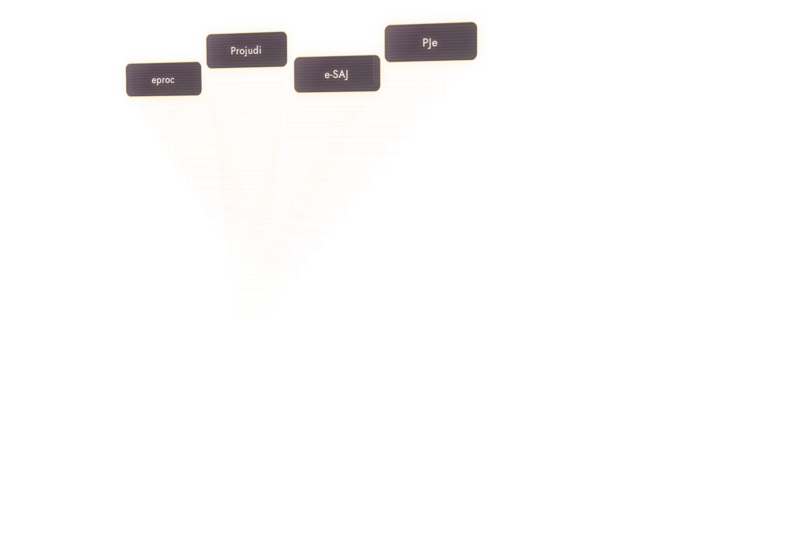
Para quem é
Nomeado pelo juiz
Processos em várias comarcas, prazos que correm em dias úteis e honorários acompanhados do arbitramento ao recebimento.
Versão AContratado pelas partes
Propostas, contratos, o retorno combinado com cada advogado ou escritório e o prazo do parecer, contado da intimação do laudo.
Versão BNo começo da carreira
Os cadastros nos tribunais, as primeiras nomeações e os primeiros honorários organizados desde o primeiro processo.
Versão A ou BServe para qualquer área de perícia.
O que vem na compra
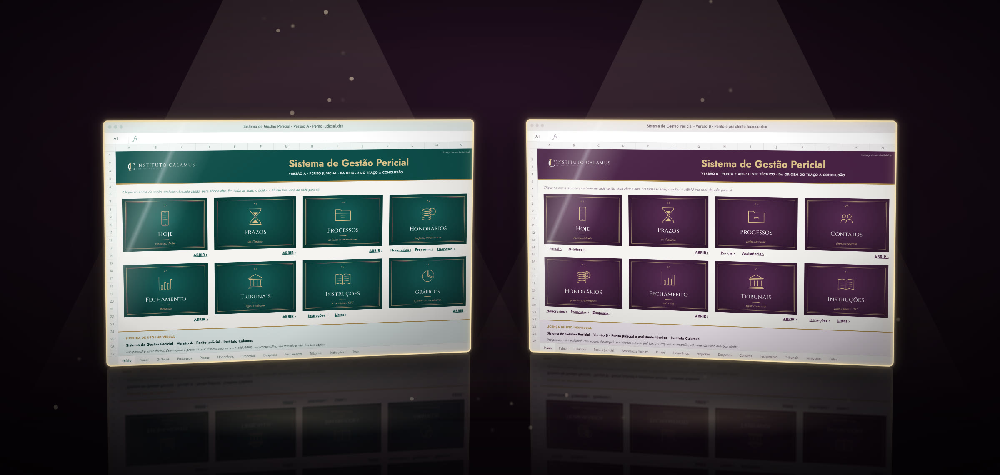
As duas vêm juntas, para Microsoft Excel 2016 ou superior.
Sem mensalidade · para Excel 2016 ou superior
Entrega pela Kiwify · garantia de 7 dias
Assim que o pagamento é confirmado, a Kiwify envia para o seu e-mail o acesso à área de membros, onde você baixa as duas versões. Uso individual.
Depois da compra
À vista ou em até 12x no cartão, pela Kiwify.
Assim que o pagamento é confirmado, a Kiwify envia o acesso à área de membros. Confira também as pastas Spam e Promoções.
As versões A e B ficam na área de membros, para abrir no Excel 2016 ou superior, no seu computador.
Garantia
Use a planilha na sua rotina. Se não for o que você esperava, peça o reembolso em até 7 dias da compra e receba o valor de volta.
Dúvidas
Não. Você paga uma vez, à vista ou parcelado, e os arquivos ficam com você.
Sim, em até 12x no cartão, pela Kiwify. O parcelamento tem juros de 3,49% ao mês, que entram no valor das parcelas: 12x de R$ 10,03, total de R$ 120,36. À vista, R$ 97.
No Microsoft Excel 2016 ou superior, no computador. A planilha não usa macros.
Sim. A versão A (perito) e a versão B (perito e assistente técnico) vêm juntas. Você usa a que combina com a sua rotina.
Sim. Processos, prazos, honorários e cadastros nos tribunais são os mesmos para qualquer área de perícia.
Os feriados nacionais, o Carnaval, a Semana Santa, o Corpus Christi e a suspensão de 20/12 a 20/01 já estão cadastrados até 2035. Os feriados locais do seu tribunal você acrescenta na aba Listas.
Não. Ela calcula a data-limite em dias úteis a partir da intimação. Quem confere nos autos e confirma é você.
No seu computador. A planilha não envia nada para ninguém. Como a aba Tribunais guarda logins e senhas, mantenha o arquivo em local seguro.
Sim, nos seus computadores: é só copiar os arquivos. As planilhas são de uso pessoal e intransferível.
Pela Kiwify. Assim que o pagamento é confirmado, você recebe no seu e-mail o acesso à área de membros, onde baixa as duas versões. Confira também as pastas Spam e Promoções.
Você tem 7 dias de garantia. Se pedir o reembolso nesse prazo, recebe o valor de volta.
Parcelado no cartão: juros de 3,49% ao mês, total a prazo de R$ 120,36.
Sem mensalidade · para Excel 2016 ou superior
Entrega pela Kiwify · garantia de 7 dias
Assim que o pagamento é confirmado, a Kiwify envia para o seu e-mail o acesso à área de membros, onde você baixa as duas versões. Uso individual.